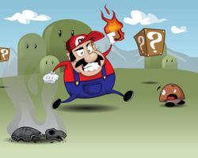

Anexo:Juegos de Mario Bros.
 De: La Frikipedia, la enciclopedia extremadamente seria.
De: La Frikipedia, la enciclopedia extremadamente seria.
Aquí tenemos una pequeña lista:
Juegos electrónicos

Mario of Duty, ganador del mejor juego del año en el (Escuped Electronic Expo) del 2007
Nintengmarios Yosi
Nintengmarios Bowser
Nintengmarios Toad
Nintengmarios Huesitos
- Mario Bras
- Mario Bres
- Mario Bris
- Mario Bros (Solo este tuvo muuuucha Fama)
- Mario Brus
- Super-mega-ultra-giga Mario Bros
- Mario Chupando mi verga
- Marioneta
- Mario & Maric
on at The Marimpic Games
- Mario & Sonic at The Paralympic Games
- Resident Mario Mushroom Chronicles
- Mario 2 The Great Escape
- Mario 3 Hoodlum Havoc
- Mario: Luigi strikes back
- Mario Hunter 3 Tri
- Brain Training con el doctor Mario
- Más Brain Training con el doctor Mario
- Mucho Más Brain Training con el doctor Mario
- Audicion in Mario's House
- Age of Mario III
- Call of Mario
- Mario of Duty
- Mario of Duty 2
- Mario of Duty 3
- Mario of Duty 4: Mushroom Kingdom Warfare
- Mario of Duty 5: Mushroom Kingdom at war
- Mario of Duty 6: Mushroom Kingdom Warfare2
- Mario of Duty 7: Mushroom Ops o también llamado "Black Mushrooms"
- Mario Raving Rabbids
- Mario 7 Ultimate (Service Pack 2)
- Mario Paint
- Mario Word
- Mario Excel
- Mario PowerPoint
- Mario Publisher
- Mario Outlook
- Mariodows Media Player
- Mario Movie Maker
- HitMario Blood Money
- Gears of Mario
- Gears of mario 2
- Mario de viaje con un kilo de setas
- Five Nights at Mario's
- Five Nights at Mario's 2
- Five Nights at Mario's 3
- Five Nights at Mario & Luigi's
- Five Nights at Mario & Luigi's 2
- Five Nights at Mario & Luigi's 3
- Five Nights at Wario's
- Code Geass: Mariuch of the Rebellion
- Mario Combat Evolved
- Mario 14
- Mario 5
- Mario Hill
- Mario Hill: The Room
- Mario Hill: Shattered Memories
- Mario Clancy's: Splinter Cell
- Mario Clancy's: Ghost Racoon
- Mario Clancy's: EndWar
- Mario & Luigi: Bowser's cum inside
- Mario Clancy's: Rainbow
Sex Six
- Mario & Luigi Dead Men
- Mario vs SmackDown 2008 Featuring Bowser
- Mario vs SmackDown 2008 Featuring Luigi
- Mario vs SmackDown 2008 Featuring
BitchPeach
- Grand Theft Mario: Mushroom City Enlace externo
- Grand Theft Mario IV
- Grand Theft Mario: San Luigi
- Mario Effect
- Super Mario Gaylaxy
- God of Mario
- Mario & Luigi Tools of Destruction
- Half Mario
- Half Mario 2: Lost
Coast Mushroom
- Half Mario 2: Episode 1
- Half Mario 2: Episode 2
- Half Mario 2: Blue Box
- Half Mario 2: Red Box

Portada del juego Mario Combat Evolved
- Half Mario 2: Orange Box
- Half Mario 2: Lemon Box
- Half Mario 2: Apple Box
- Half Mario 2: Peach Box
- Half Mario 2: Luigi Box
- Half Mario 2: Yoshi Box
- Half Mario 2: Grape Box
- Half Mario 2: Mango Box
- El padrino es Mario: Mario Mata al verdadero Padrino
- El padrino es Mario 2: No le gusta ser Padrino
- El padrino es Mario 3: resucita al Padrino de verdad
- El padrino es Mario 4: El padrino mata a mario
- El padrino es Mario 5: Mario resucita al séptimo Día
- Forza MarioSport
- Forza MarioSport 2
- Mario Ultimate Alliance
- The Elder Scrolls III:Mariowind
- The Elder Scrolls IV: Mario
- The legend of Mario: Ocarina de mala calidad
- The legend of Mario II: La mascara friki
- The legend of Mario III: El barco que no navega
- The legend of Mario IV: Link mata a Mario por quitarle el juego
- Metal Gear Mario: The Twin Marios
- Metal Gear Mario 2: Sons of Peach
- Metal Gear Mario 3: Mushroom Eater
- Metal Gear Mario 4: Bullet Bill of the Patriots
- Metal Gear Mario: Rising
- Kingdom Mario
- Mario Band
- Everyone's Mariomon Ranch
- Mario Fantasy
- Unreal Mario
- Mario Kombat
- Mario Calibur
- Fireball Wright: Mario Attorney
- Fireball Wright: Mario Attorney Injustice for Koopas
- Fireball Wright: Bullet Bills and Castles
- Mario Calibur IV
- Big Mario Academy
- Mario Battlefront
- Mario FPS
Imagen de HitMario Blood Money
- Bombermario
- Bombermario Advance
- Mariotroid
- F-Mario
- F-Mario X
- F-Mario GX
- Resident Mario
- Resident Mario 2
- Resident Mario 3: Bowser
- Resident Mario 4
- Resident Mario 5
- Resident Mario Code: Toad
- Resident Mario: Gay in the Eden
- Resident Mario: Remake of all
- Mario Muere
- Mario Muere 2: Mario no murio
- Mario Muere 3: Esta vez si murio
- Mario Muere 4: Mario revive
- Mario Muere 5: La venganza
- Mario Muere 6: Mario se coge a Link y muere de herpes
- Mario Muere 7: Luigi furioso se coge a la princesa en su tumba
- Mario Muere 8: Luigi se rapea a las 3 princesas de Mario
- Mario Cambio de sexo
- Mario Cambio de sexo 2: La envidia de Luigi
- Mario Cambio de sexo 3: El rechazo de Peach
- Mario Cambio de sexo 4: Luigi siente más envidia
- Mario Cambio de sexo 5: Luigi siente envidia, pero ya no tanto como antes
- Mario Cambio de sexo 6: Luigi ya no siente envidia
- Mario Cambio de sexo 7: Pero ahora el que siente envidia es Waluigi
- Viewtiful Mario
- Viewtiful Mario 2
- Mario Splitters
- Mario Quest
- BioMario: Game of the Year Edition
- Guitar Mario
- Guitar Mario 2
- Guitar Mario Encore: Rock The Kingdom
- Guitar Mario 3: Legends Of Peach
- Guitar Mario 3: AeroParatroopa
- Guitar Mario: On Tour
- Guitar Mario: MetallMario
- Pc Fútbol Mario
- Tomb Mario
- Mario mecánico
- Mario Misionero
- Mario mono
- Mario morfosis.
- Mario Niñero
- Mario's Creed
- Mario-Luigizooie
- Mario-Luigitooie
- Mariocraft
- Mariocraft II
- Mariocraft III
- World of Mariocraft
- Mario Gaiden

Mario en su nuevo juego "Karaoke Hero III: Legends of Mario Rock
- Mario Odyssey
- M.A.R.I.O.
- M.A.R.I.O. Online
- M.A.R.I.O. Expansion Set
- Mariowalker(MM Productions)
- Ma-Ri-Oh!
- Mario Mario Pro Skater
- Mario Mario Pro Skater 2
- Mario Mario Pro Skater 3
- Mario Mario Pro Skater 4
- Mario Mario Underground
- Mario Mario Underground 2
- Mario Emblem
- Mario Emblem: The Mushroom Blade
- Mario Emblem: The Shadow Bowsers and The Star Blade
- Mario Emblem: The sacred Mushrooms
- Mario Emblem: Mushrom Dawn
- Mario Emblem: Path of Mushrom
- Silent Mario
- Mario Sun
- Mario Sun 2: The Lost Game Over
- Marioid
- Marioid II: The Return Of Mario
- Super Marioid
- Marioid Fusion
- Marioid: Toad Mission
- Marioid Prime Hunters: First Goomba
- Marioid Prime Hunters
- Marioid Prime
- Marioid Prime 2: Echoes
- Marioid Prime 3: Corruption
- Mario May Cry 1
- Mario May Cry 2
- Mario May Cry 3
- Mario May Cry 4
- The Legend Of Mario
- The Legend Of Mario: Mario's Awekening
- The Legend Of Mario: Oracle Of Mario
- The Legend Of Mario: Ocarina of Mario
- The Legend Of Mario: Bowser's Mask
- The Legend Of Mario: Yellow Cape Waker
- The Legend Of Mario: Toadish Cap
- The Legend Of Mario: Twilight Peach
- The legend of mario; Oracle of luigi
- The Legend Of Mario: Boo Hourglass
 "Mario Flash Fire Edition 08"
- Pro Evolution Mario
- Super Star Soccer Mario 98
- Super Star Soccer Mario 2000
- Mario in arms: MARIO IN BLOOD
- Mario in arms: ROAD TO KINGDOM 30
- Mario in arms: ESCAPE FROM THE HELL
- Super Star Soccer Mario 2015
- Ragnarok OnMario
- Mario Story
- Marinogy
- SSBM:Super Smash Bros Mario
- Marioman
- Marioman II
- Marioman III
- Marioman IV
- Marioman V
- Marioman VI
- Marioman VII
- Marioman VIII
- Marioman IX
- Marioman X
- Marioman X II
- Marioman X III
- Marioman X IV
- Marioman X V
- Marioman X VI
- Marioman X VII
- Marioman X VIII
- Marioman X IX
- Marioman X X
- Marioman X XI
- Marioman X XII
- Marioman X XIII
- Marioman 64
- Marioman Z
- Marioman Z 2
- Marioman Z 3
- Marioman Z 4
- Marioman Battlekingdom
- Marioman Battlekingdom 2
- Marioman Battlekingdom 3: Blue
- Marioman Battlekingdom 3: White
- Marioman Battlekingdom 4: Red Mushrom
- Marioman Battlekingdom 4: Blue Poison Mushrom
- Marioman Battlekingdom 5: Team Luigiman
- Marioman Battlekingdom 5: Team Warionel
- Marioman Battlekingdom 6: Cybeast Bowser
- Marioman Battlekigndom 6: Cybeast Cackletta
- Marioman Battlekingdom: Battlecoin Tournament
- Marioman ZX
- Marioman ZX Advent
ura
- Marioman Starforce Lakitu
- Marioman Starforce Paratroopa
- Marioman Starforce Dragon
- Marioman Starforce 2: Yoshi x Luigi
- Marioman Starforce 2:
Hoops 3 on 3 Ninja x Luigi
- Marioeach: The Blade of Coins
- Marioeach 2: Dark Toads
- Mariuto
- Mariuto: Clash of Toads
- Mariuto: Ultimate Mushrom
- Mariuto: Koopa Council
- Mariodogs: Dalmarian and Toads
- Mariodogs: Chimario and Toads
- Mariodogs: Mario Retriever and Toads
- Mariomon Red
- Mariomon Blue
- Mariomon Yellow
- Mariomon Gold
- Mariomon Silver
- Mariomon Fire Red
- Mariomon Leaf Green
- Mariomon Crystal
- Mariomon Ruby
- Mariomon Sapphire
- Mariomon Emerald
- Mariomon Diamond
- Mariomon Pearl
- Mariomon Platinum
- Mariomon Stadium
- Mariomon Stadium 2
- Mariomon Puzzle League
- Mariomon Snap
- Mariomon Colosseum
- Mariomon XD: Gale of Bowser
- Mariomon Box: Ruby & Sapphire
- Mariomon Revolution
- My Mariomon Ranch
- Mariomon Rangers
- Mariomon Rangers Battonage
- Mariomon Rangers: Shadows of Mushrom Kingdom
- Mariomon Dash
- Mariomon Trozei
- Mariomon Mistery Kingdom: Red Mario Team
- Mariomon Mistery Kingdom: Blue Mario Team
- Mariomon Mistery Kingdom: Marios of Time
- Mariomon Mistery Kingdom: Marios of Darkness
- Mariomon Pinball
- Mariomon Pinball Ruby & Sapphire
- Mariomon Pinball DS
- Mariomon Puzzle Challenge
- Mario Pelota Vasca
- Mario of Empires
- Mario of Empires II The Age of Bowser
- Mario of Empires III
- Mario of Mythology
- Mario Strike 1.5
- Mario Strike 1.6
- Mario Strike Source
- Mario OPS
- Isamu
- Mario 98
- Mario Vista
- Mario XP
- Mario XD
- Mario XB
- Mario Bros Z
- Mario Bros GT
- Mario Bros AF
- Mario in the Darkness
- Mario Ranger
- Mario morfosis.
- Mario Tetris
- Mario Tetris 2
- Winning Eleven Mario
- The King of Mario
- The king of mario 2001
- The king of mario 2002
- The king of mario 2003
- The king of mario 2004
- The king of mario 2005
- The king of mario 2006
- The king of mario 2007
- The king of mario 2008
- The king of mario 2009
- The king of mario 2010
- The king of mario 2011
- The king of mario 2012
- The king of mario 2013
- The king of mario 2014
- The king of mario 2015
- The king of mario 2016
- Waku Waku 7 (sale mario)
- Mario Clash of Ninja
- Mario Gekitou Ninja Taisen
- Mario Gekitou Ninja Taisen 2
- Mario Gekitou Ninja Taisen 3
- Mario Gekitou Ninja Taisen 4
- Mario Clash of Ninja Revolution
- Mario Gekitou Ninja Taisen EX
- Mario Ultimate Ninja
- Mario Ultimate Ninja 2
- Mario Ultimate Ninja 3
- Mario Ultimate Ninja Heroes
- Mario Party
- Mario Parto
- Mario Parkour
- Mario Pecador
- Mario Kart
- Mario Coches
- Mario Cachas
- Mario Supermercado
- Super Mario bebiendo agua
- Mario Teto
- Mario Hostal
- Mario Hotel
- The Mario: Mario's path
- Marioutimate Accel
- Marioutimate Accel 2
- Mario Ninja Council 1
- Mario Ninja Council 2
- Mario Ninja Council 3
- Mario Path of the Ninja
- Mario Uketsugareshi Hi no Ishi
- Mario Bros Chronicles
- Mario Bros Chronicles 2
- Mario Rice of Ninja
- Mario Konoha Senki
- Mario Ninja Destiny
- Battle Stadium D.O.M (Dragon Ball, One Piece, Mario Bros)
- Mario Super
- Mario Super Duper
- Mario Super Duper Reloaded
- Mario Super Duper Reloaded 2
- Mario Super Duper Reloaded 3
- Mario Super Duper Revolutions
- Mario Super Duper Revolutions Ultimate
- Mario Super Duper Revolutions Ultimate 2
- Mario Super Duper Revolutions Mega Ultimate
- Mario Super Duper Revolutions Mega Destroyer Ultimate
- Mario Super Duper Revolutions Mega Destroyer Magic Ultimate Forces
- Mario Super Duper Revolutions Mega Destroyer Magic Ultimate Forces 2
- Mario Super Duper Revolutions Mega Destroyer Magic Ultimate Forces 3
- Mario Super Duper Revolutions Mega Destroyer Magic Ultimate Forces 4
- M.S.D.R.M.D.M.U.F. MMORPG (Online)
- Mario Super Duper Revolutions Mega Destroyer Magic Ultimate Force Chronicles
- Mario Super Duper Revolutions Mega Destroyer Magic Ultimate Force Wars Chronicles Z
- Mario Super Duper Revolutions Mega Destroyer Magic Ultimate Force Wars Chronicles
- Mario Super Duper Revolutions Mega Destroyer Magic Ultimate Force Wars Chronicles and the demonic spirits of Bowser
- Wii music Mario: Musica
Rock malisisima
- Mario se hace metrosexual
- Mario se depila 1
- Mario se depila 2
- Mario se depila: Ahora toca la otra pierna
- Mario grita de dolor
- Mario se queda afonico
- Mario se arrepiente
- Mario se vuelve otra vez un hombre maduro: Se intenta ligar a la princesa
- Mario se vuelve otra vez un hombre maduro 2: la princesa se ha ido con Luigi
- Mario se intenta suicidar: pero no lo consigue
- Mario se intenta suicidar 2: lo conseguirá mañana
- Mario se intenta suicidar 3: Ya no se suicidará más
- Mario se arrepiente en su lecho de muerte
- Mario en el cielo coje una flor
- Mario mata a Dios
- Mario es Dios
- Mario Paja
- Mario Paja 2: En el Parque
- Mario Paja 3: En el Trabajo
- Mario Paja 4: La Paja Final
- Mario Paja 5: Mario esta Mas Turbado que nunca
- Mario Pajea
- Mario Pajea 2: Él y Luigi
- Mario Pajea 3: Él Luigi y Bowser hacen un trio.
- Mario Pajea 4: Él, Luigi, Bowser y un Toad
- Mario Pajea 5: The secret porn movie
- Pro evolution mario.
- Meting Mario
- The Lord of the Mushroom
- Little big Mario
- Spacers In Mario
- Mario-Imagina ser fontanero
El profesor Mario y la torre misteriosa
El profesor Mario y la seta de Pandora
El profesor mario y el mundo 8 perdido
Juegos para el Movil, Ipod, Iphone y los mejores idiotas
- Street Fighter Mario
- Street Fighter Mario 2
- Golden San Andreas Mario
- Golden Sin Mario 2: Trotamierdas
- Busco Mario Cachondo (Ah no, que esto no va aqui)
- Los Sims Mario 2 naufragio con Luigi
- Lostmario (O Perdidos con Mario)
- Mario y Luigi se fusionan
- Mario y Luigi se fusionan 2: Llega Buu el gordo
- Dragon Mario
- Dragon Mario 2: Budokai Tenmario
- Mario Güi
- Mario Güi 2: El Güifit ha reventado con el peso de mario
- Mario Güi 3: Jugando al Güi Sports Risorte
- Mario 64000000000000
- Cocina con Mario
- Cocina con Mario 2: Aprende a encender el fuego
- Tekken 10: Mario del 1.000.000.000.000.000.000.000.000 A.C. : Mario Vs. Dinosaurios
cachondos
Juegos no electrónicos en los que también aparece, aunque parezca absurdo y efectivamente lo sea
- Mariopoly (consigue todas las monedas doradas que puedas)
- Mario: the Gathering (sólo existen dos colores: el rojo de Mario y el verde de Luigi)
- Mario Quest (donde Mario y Luigi exploran mazmorras lanzando dados en vez de bolas de fuego)
- Dungeons & Marios (ídem que el anterior)
- Mariodrez (peón=goomba, alfil=koopa, caballo=Yoshi, torre=planta carnívora, rey=Bowser, reina=Peach. Al acto de mover una pieza a otro espacio ocupado y matar a la pieza enemiga que se halla en él se le denomina "aplastar"). Versión electrónica: Chessmario.
- Churro, Media Manga, Mariotero.
- Marioncesto (¡introduce la bola de fuego en la tubería!)
- Marioasotzailes (deporte Vasco que consiste en levantar setas)
Kits de Mario que nunca se vendieron
- Marigay: Kit de mario
vestido de chica para que te vuelvas un poco maricon homosexual
- Mario experimentos: Juego de experimentos que probo el creador de mario y le salio 1 oreja en la pierna y un pie en el cerebro
- Mario Kart kit:Un kit para tu coche to guapo para que lo tunes ahi.el kit consta de:Unas pegatinas de danonino,un linterna para hacer los neones,un poster de peach desnuda,una figura de yoshi bailando y un kilo de setas
- Mario Party kit: Un kit para tus fiestas,contiene:todo tipo de drogas(incluido las setas)una musica de hambiente.unas patatitas con tazo y una bola de discoteca
Juegos de flash de Mario
- Submachinmario: el chino: Juego en el que tienes que ayudar a mario a encontrar a un chino en un laberinto
- Submachinmario 2: la aspiradora: en una casa tenemos que encontrar la aspiradora para limpiar la casa de mario
- Submachinmario 3: la figura geometrica: tenemos que encontrar en una ciudad 1.000 partes de una figura geometrica
- Submachinmario 4: el portal: tienes que encontrar las claves para los portales hasta llegar al vater
(Que mario se esta cagando)
- Submachinmario 5: la regla: a Mario le ha entrado la regla y tienes que encontrar
tampones algo que le sirva para que no sangre
- Submachinmario 6: el libro: Ayuda a Mario a encontrar un libro
para limpiarse el trasero, que se ha quedado sin papel para leer un rato
- Submachinmario 0: los bebes de mario: Esta parte nunca salio. Consiste en conseguir 100 bebes entrando de casa en casa y matando a las madres y padres
- Submachinmario 7: El manicomio: en esta parte tienes que encontrar un video en el manicomio para volver a mario loco
(Y por qué el creador esta harto de hacer una saga de juegos que no juega ni dios)
MMORPG
- OMario
- DarkMario
- MarioOrbit
- Mariatus
- TheLord(Mario)
- World of Mario
- Mario's Warcraft
- Asquerosamente Mario
- Mariostar
 Anexos Anexos
|
|
|
Autor(es):
- Khazike Khashondo
- Alex el Mono
- Fallen Angel
- Duhbomb
- Enmanuelp18
- Mad Max
- AlemanH
- Dracobulos
- ArreKarallo
- MasterWolf59
Frikipedia 2005-2016, Licencia
GFDL 1.2 - Extraído por FrikiLeaks